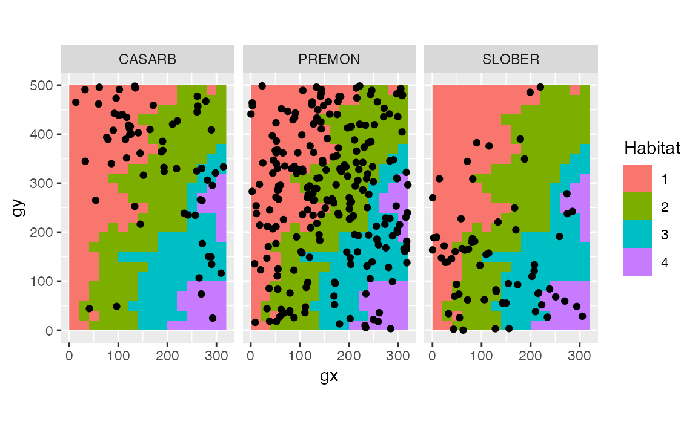

vignettes/siteonly/tt_test.Rmd
tt_test.RmdThis article shows how to determine habitat-species associations with the function tt_test(), developed by Sabrina Russo, Daniel Zuleta, Matteo Detto, and Kyle Harms.
First, install and load (“open”) the relevant packages.
# install.packages("remotes")
remotes::install_github("forestgeo/fgeo")
library(dplyr)
#>
#> Attaching package: 'dplyr'
#> The following objects are masked from 'package:stats':
#>
#> filter, lag
#> The following objects are masked from 'package:base':
#>
#> intersect, setdiff, setequal, union
library(ggplot2)
library(fgeo.x)
library(fgeo.tool)
#>
#> Attaching package: 'fgeo.tool'
#> The following object is masked from 'package:stats':
#>
#> filter
library(fgeo.analyze)
# For reproducible results
set.seed(1014)We will use example datasets that come with fgeo.analyze.
census <- fgeo.x::download_data("luquillo_tree6_random")
str(census)
#> tibble [1,000 × 19] (S3: tbl_df/tbl/data.frame)
#> $ treeID : int [1:1000] 104 119 180 602 631 647 1086 1144 1168 1380 ...
#> $ stemID : int [1:1000] 143 158 225 736 775 793 1339 1410 1438 1702 ...
#> $ tag : chr [1:1000] "10009" "100104" "100171" "100649" ...
#> $ StemTag : chr [1:1000] "10009" "100104" "100174" "100649" ...
#> $ sp : chr [1:1000] "DACEXC" "MYRSPL" "CASARB" "GUAGUI" ...
#> $ quadrat : chr [1:1000] "113" "1021" "921" "821" ...
#> $ gx : num [1:1000] 10.3 182.9 164.6 149 38.3 ...
#> $ gy : num [1:1000] 245 410 410 414 245 ...
#> $ MeasureID: int [1:1000] 582850 578696 617049 614253 598429 614211 603131 616923 603151 614023 ...
#> $ CensusID : int [1:1000] 6 6 6 6 6 6 6 6 6 6 ...
#> $ dbh : num [1:1000] 195 44.9 46.1 33.1 139 248 176 75 613 NA ...
#> $ pom : chr [1:1000] "1.45" "1.25" "1.35" "1.3" ...
#> $ hom : num [1:1000] 1.45 1.26 1.34 1.3 1.25 1.35 1.42 1.3 1.25 NA ...
#> $ ExactDate: Date[1:1000], format: "2016-04-20" "2016-08-04" ...
#> $ DFstatus : chr [1:1000] "alive" "alive" "alive" "alive" ...
#> $ codes : chr [1:1000] "MAIN;A" "MAIN;A" "SPROUT;A" "MAIN;A" ...
#> $ nostems : num [1:1000] 1 1 2 1 1 1 1 1 1 1 ...
#> $ status : chr [1:1000] "A" "A" "A" "A" ...
#> $ date : num [1:1000] 20564 20670 20670 20664 20565 ...
# Creating habitat data from elevation data
elevation <- fgeo.x::elevation
habitat <- fgeo_habitat(elevation, gridsize = 20, n = 4)
str(habitat)
#> tibble [400 × 3] (S3: fgeo_habitat/fgeo_topography/tbl_df/tbl/data.frame)
#> $ gx : num [1:400] 0 0 0 0 0 0 0 0 0 0 ...
#> $ gy : num [1:400] 0 20 40 60 80 100 120 140 160 180 ...
#> $ habitats: int [1:400] 1 1 1 1 1 1 1 1 1 1 ...
fgeo.plot::autoplot(habitat)To load your own data, you may run something like this:
We will pick alive trees, of 10 mm or more, and of sufficiently abundant species.
pick <- filter(
census,
# Keep only alive
status == "A",
# Keep dbh of 10 mm or more (drops missing dbh)
dbh >= 10
)
# Count number of rows per species
pick <- add_count(pick, sp)
# Keep sufficiently abundant trees
pick <- filter(pick, n > 50)
# Summary
unique(select(pick, sp, n))
#> # A tibble: 3 x 2
#> sp n
#> <chr> <int>
#> 1 CASARB 66
#> 2 PREMON 234
#> 3 SLOBER 66Before testing, we can overview the relationship between species and habitats with a plot.
# Tweaks
offset <- 20 / 2
habitat2 <- mutate(
habitat,
# Center species and habitat data
x = gx + offset,
y = gy + offset,
# From continuous to categorical
habitats = as.factor(habitats)
)
ggplot(pick, aes(x = gx, y = gy)) +
geom_raster(data = habitat2, aes(x, y, fill = habitats)) +
geom_point() +
coord_fixed() +
facet_wrap(~sp) +
labs(fill = "Habitat")
tt_test() and any number of species
tt_test_result <- tt_test(pick, habitat)
#> Using `plotdim = c(320, 500)`. To change this value see `?tt_test()`.
#> Using `gridsize = 20`. To change this value see `?tt_test()`.
#> Warning: Is `census` a tree table (not a stem table)? See `?tt_test()`.
tt_test_result
#> [[1]]
#> N.Hab.1 Gr.Hab.1 Ls.Hab.1 Eq.Hab.1 Rep.Agg.Neut.1 Obs.Quantile.1 N.Hab.2
#> CASARB 29 1242 356 2 0 0.776 20
#> Gr.Hab.2 Ls.Hab.2 Eq.Hab.2 Rep.Agg.Neut.2 Obs.Quantile.2 N.Hab.3
#> CASARB 390 1206 4 0 0.244 12
#> Gr.Hab.3 Ls.Hab.3 Eq.Hab.3 Rep.Agg.Neut.3 Obs.Quantile.3 N.Hab.4
#> CASARB 778 817 5 0 0.486 5
#> Gr.Hab.4 Ls.Hab.4 Eq.Hab.4 Rep.Agg.Neut.4 Obs.Quantile.4
#> CASARB 932 658 10 0 0.583
#>
#> [[2]]
#> N.Hab.1 Gr.Hab.1 Ls.Hab.1 Eq.Hab.1 Rep.Agg.Neut.1 Obs.Quantile.1 N.Hab.2
#> PREMON 91 1093 504 3 0 0.683 89
#> Gr.Hab.2 Ls.Hab.2 Eq.Hab.2 Rep.Agg.Neut.2 Obs.Quantile.2 N.Hab.3
#> PREMON 1254 344 2 0 0.784 40
#> Gr.Hab.3 Ls.Hab.3 Eq.Hab.3 Rep.Agg.Neut.3 Obs.Quantile.3 N.Hab.4
#> PREMON 305 1292 3 0 0.191 14
#> Gr.Hab.4 Ls.Hab.4 Eq.Hab.4 Rep.Agg.Neut.4 Obs.Quantile.4
#> PREMON 270 1322 8 0 0.169
#>
#> [[3]]
#> N.Hab.1 Gr.Hab.1 Ls.Hab.1 Eq.Hab.1 Rep.Agg.Neut.1 Obs.Quantile.1 N.Hab.2
#> SLOBER 18 273 1324 3 0 0.171 24
#> Gr.Hab.2 Ls.Hab.2 Eq.Hab.2 Rep.Agg.Neut.2 Obs.Quantile.2 N.Hab.3
#> SLOBER 810 788 2 0 0.506 17
#> Gr.Hab.3 Ls.Hab.3 Eq.Hab.3 Rep.Agg.Neut.3 Obs.Quantile.3 N.Hab.4
#> SLOBER 1155 440 5 0 0.722 7
#> Gr.Hab.4 Ls.Hab.4 Eq.Hab.4 Rep.Agg.Neut.4 Obs.Quantile.4
#> SLOBER 1292 303 5 0 0.807To help you interpret the results, you can use summary().
summary(tt_test_result)
#> # A tibble: 12 x 3
#> sp habitat association
#> <chr> <chr> <chr>
#> 1 CASARB 1 neutral
#> 2 CASARB 2 neutral
#> 3 CASARB 3 neutral
#> 4 CASARB 4 neutral
#> 5 PREMON 1 neutral
#> 6 PREMON 2 neutral
#> 7 PREMON 3 neutral
#> 8 PREMON 4 neutral
#> 9 SLOBER 1 neutral
#> 10 SLOBER 2 neutral
#> 11 SLOBER 3 neutral
#> 12 SLOBER 4 neutralYou may want to combine the output into a single matrix by row-binding each element of the results-list.
Reduce(rbind, tt_test_result)
#> N.Hab.1 Gr.Hab.1 Ls.Hab.1 Eq.Hab.1 Rep.Agg.Neut.1 Obs.Quantile.1 N.Hab.2
#> CASARB 29 1242 356 2 0 0.776 20
#> PREMON 91 1093 504 3 0 0.683 89
#> SLOBER 18 273 1324 3 0 0.171 24
#> Gr.Hab.2 Ls.Hab.2 Eq.Hab.2 Rep.Agg.Neut.2 Obs.Quantile.2 N.Hab.3
#> CASARB 390 1206 4 0 0.244 12
#> PREMON 1254 344 2 0 0.784 40
#> SLOBER 810 788 2 0 0.506 17
#> Gr.Hab.3 Ls.Hab.3 Eq.Hab.3 Rep.Agg.Neut.3 Obs.Quantile.3 N.Hab.4
#> CASARB 778 817 5 0 0.486 5
#> PREMON 305 1292 3 0 0.191 14
#> SLOBER 1155 440 5 0 0.722 7
#> Gr.Hab.4 Ls.Hab.4 Eq.Hab.4 Rep.Agg.Neut.4 Obs.Quantile.4
#> CASARB 932 658 10 0 0.583
#> PREMON 270 1322 8 0 0.169
#> SLOBER 1292 303 5 0 0.807You also can gather all results into a single dataframe – this lets you use a wide range of tools for data manipulation and visualization.
as_tibble(tt_test_result)
#> # A tibble: 12 x 8
#> habitat sp N.Hab Gr.Hab Ls.Hab Eq.Hab Rep.Agg.Neut Obs.Quantile
#> * <chr> <chr> <dbl> <dbl> <dbl> <dbl> <dbl> <dbl>
#> 1 1 CASARB 29 1242 356 2 0 0.776
#> 2 2 CASARB 20 390 1206 4 0 0.244
#> 3 3 CASARB 12 778 817 5 0 0.486
#> 4 4 CASARB 5 932 658 10 0 0.583
#> 5 1 PREMON 91 1093 504 3 0 0.683
#> 6 2 PREMON 89 1254 344 2 0 0.784
#> 7 3 PREMON 40 305 1292 3 0 0.191
#> 8 4 PREMON 14 270 1322 8 0 0.169
#> 9 1 SLOBER 18 273 1324 3 0 0.171
#> 10 2 SLOBER 24 810 788 2 0 0.506
#> 11 3 SLOBER 17 1155 440 5 0 0.722
#> 12 4 SLOBER 7 1292 303 5 0 0.807You can benefit from storing your results in a dataframe. Compared to a matrix, a dataframe fits better in common workflows for data manipulation and visualization. The dataframe is the most important data structure used in dplyr, ggplot2, and many other packages. Here are some examples of what you can do with our dataframe output. (The next few code chunks use the pipe operator (%>%) to avoid saving intermediary results and to make our code more expressive – where each line is an imperative statement that communicates our intention.)
as_tibble(tt_test_result) %>%
filter(sp == "CASARB")
#> # A tibble: 4 x 8
#> habitat sp N.Hab Gr.Hab Ls.Hab Eq.Hab Rep.Agg.Neut Obs.Quantile
#> <chr> <chr> <dbl> <dbl> <dbl> <dbl> <dbl> <dbl>
#> 1 1 CASARB 29 1242 356 2 0 0.776
#> 2 2 CASARB 20 390 1206 4 0 0.244
#> 3 3 CASARB 12 778 817 5 0 0.486
#> 4 4 CASARB 5 932 658 10 0 0.583
as_tibble(tt_test_result) %>%
group_by(sp, habitat) %>%
summarize(total_stem_count = sum(N.Hab))
#> `summarise()` regrouping output by 'sp' (override with `.groups` argument)
#> # A tibble: 12 x 3
#> # Groups: sp [3]
#> sp habitat total_stem_count
#> <chr> <chr> <dbl>
#> 1 CASARB 1 29
#> 2 CASARB 2 20
#> 3 CASARB 3 12
#> 4 CASARB 4 5
#> 5 PREMON 1 91
#> 6 PREMON 2 89
#> 7 PREMON 3 40
#> 8 PREMON 4 14
#> 9 SLOBER 1 18
#> 10 SLOBER 2 24
#> 11 SLOBER 3 17
#> 12 SLOBER 4 7